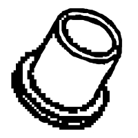
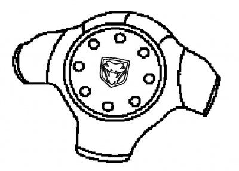
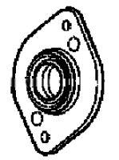

1992 - 2013 Dodge SRT Viper Steering Gear Mounting Isolator - 04642116
Part # 04642116
$45.00
Price as of 2026-07-13 archive
Available when archived
Contact to orderor email info@PartsRack.com · 360.837.3937
| Part number | 04642116 |
|---|---|
| Fits years | 1992-2013 |
| Models | Viper |
| Condition | Brand New |
| Category | Steering |
Description
1992 - 2013 Dodge SRT Viper Steering Gear Mounting Isolator
4 required for steering gear - Price shown is for 1 each
*BRAND NEW*
Mopar Part # 04642116
Ships in 2 - 5 business days
Archived 2026-05-14 · view original capture
More in Steering

2003 - 2010 Dodge Viper SRT10 Steering Wheel with Red Stitching - 0TQ901R1AA
Part # 0TQ901R1AA
$485.00

2008 - 2010 Dodge Viper Driver Airbag Horn Center - 1CZ83DX9AD
$1,128.00

2003-2010 Viper SRT10 Steering Column Shaft Bearing 05290187AA
Part # 05290187AA
$65.00

2003 - 2010 Viper SRT10 Upper Steering Column Shroud - 0UC77DX9AA
$27.00